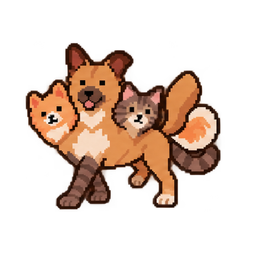
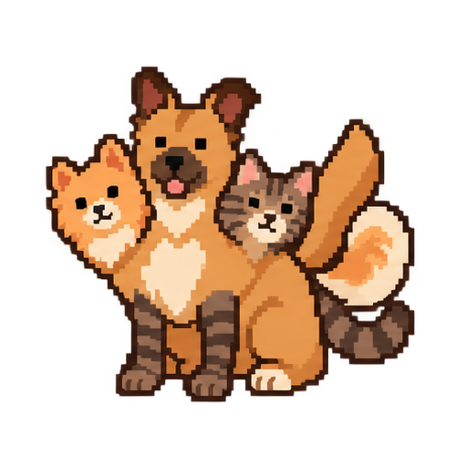
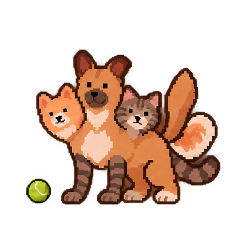
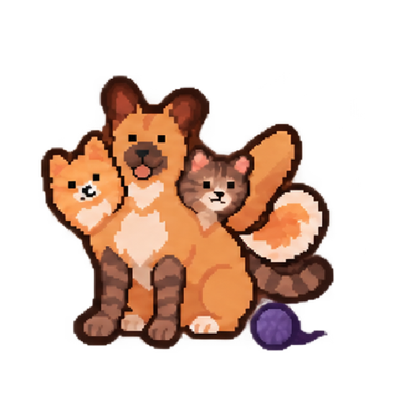
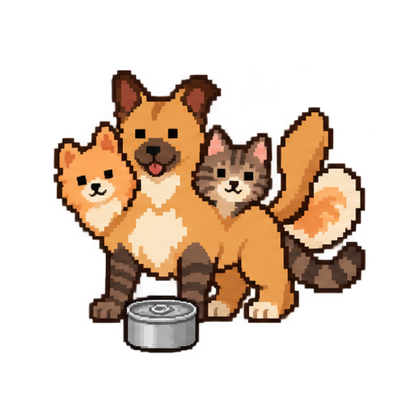

01Loop

Walking
Coordinated front and hind footfalls, both rear paws lifting and swinging, and broad tail wags.
Five Cerberus animation studies. A walk, a quiet seat, two distractions, and a shared treat. Step through any sequence or watch it play.

Coordinated front and hind footfalls, both rear paws lifting and swinging, and broad tail wags.

Seated breathing, blinking, an ear twitch, and a quiet tail sway.

Both dogs follow the bounce and wag their tails excitedly while the cat stays composed.

The cat follows the rolling yarn with a broad striped-tail swish while the two dogs stay relaxed.

A pull-tab can opens, then all three perk up and wag their tails.